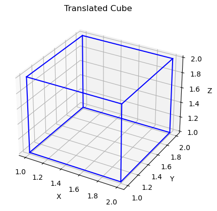

import numpy as np
import matplotlib.pyplot as plt
from matplotlib.patches import Polygon
# Define a square as a list of vertices (x, y)
square_vertices = np.array([[0, 0], [1, 0], [1, 1], [0, 1], [0, 0]])
# Function to plot a polygon
def plot_polygon(vertices, title):
fig, ax = plt.subplots()
ax.add_patch(Polygon(vertices, closed=True, fill=True, edgecolor='darkgreen'))
ax.set_aspect('equal', 'box')
ax.set_xlim(-2, 2)
ax.set_ylim(-2, 2)
ax.set_title(title)
ax.grid(True)
plt.show()
# Translation: Move the square by (tx, ty)
def translate(vertices, tx, ty):
return vertices + np.array([tx, ty])
# Rotation: Rotate the square by angle theta (in radians) around the origin
def rotate(vertices, theta):
rotation_matrix = np.array([[np.cos(theta), -np.sin(theta)],
[np.sin(theta), np.cos(theta)]])
return np.dot(vertices, rotation_matrix)
# Scaling: Scale the square by factors sx and sy
def scale(vertices, sx, sy):
return vertices * np.array([sx, sy])
# Reflection: Reflect the square about the x-axis or y-axis
def reflect(vertices, axis='x'):
if axis == 'x':
reflection_matrix = np.array([[1, 0],
[0, -1]])
elif axis == 'y':
reflection_matrix = np.array([[-1, 0],
[0, 1]])
else:
raise ValueError("Axis must be 'x' or 'y'")
return np.dot(vertices, reflection_matrix)
# Plot the original square
plot_polygon(square_vertices, "Original Square")
# Translate the square
translated_square = translate(square_vertices, 1, 1)
plot_polygon(translated_square, "Translated Square")
# Rotate the square
rotated_square = rotate(square_vertices, np.pi/4) # Rotate by 45 degrees (pi/4 radians)
plot_polygon(rotated_square, "Rotated Square")
# Scale the square
scaled_square = scale(square_vertices, 2, 0.5) # Scale by factor of 2 in x-direction, 0.5 in y-direction
plot_polygon(scaled_square, "Scaled Square")
# Reflect the square about the x-axis
reflected_x_square = reflect(square_vertices, axis='x')
plot_polygon(reflected_x_square, "Reflected Square (about x-axis)")
# Reflect the square about the y-axis
reflected_y_square = reflect(square_vertices, axis='y')
plot_polygon(reflected_y_square, "Reflected Square (about y-axis)")import numpy as np
import matplotlib.pyplot as plt
from mpl_toolkits.mplot3d import Axes3D# Define the vertices of a cube
cube_vertices = np.array([
[0, 0, 0],
[1, 0, 0],
[1, 1, 0],
[0, 1, 0],
[0, 0, 1],
[1, 0, 1],
[1, 1, 1],
[0, 1, 1]
])# Function to plot a 3D cube
def plot_cube(vertices, title):
fig = plt.figure()
ax = fig.add_subplot(111, projection='3d')
# Draw edges
for i in range(4):
ax.plot3D(*zip(vertices[i], vertices[(i+1)%4]), color='b')
ax.plot3D(*zip(vertices[i+4], vertices[((i+1)%4)+4]), color='b')
ax.plot3D(*zip(vertices[i], vertices[i+4]), color='b')
ax.set_xlabel('X')
ax.set_ylabel('Y')
ax.set_zlabel('Z')
ax.set_title(title)
plt.show()# Translation: Move the cube by (tx, ty, tz)
def translate(vertices, tx, ty, tz):
translation_matrix = np.array([[1, 0, 0, tx],
[0, 1, 0, ty],
[0, 0, 1, tz],
[0, 0, 0, 1]])
homogeneous_vertices = np.hstack((vertices, np.ones((vertices.shape[0], 1))))
translated_vertices = np.dot(translation_matrix, homogeneous_vertices.T).T[:, :3]
return translated_vertices# Rotation: Rotate the cube by angles (rx, ry, rz) around the x, y, and z axes respectively
def rotate(vertices, rx, ry, rz):
rotation_matrix_x = np.array([[1, 0, 0],
[0, np.cos(rx), -np.sin(rx)],
[0, np.sin(rx), np.cos(rx)]])
rotation_matrix_y = np.array([[np.cos(ry), 0, np.sin(ry)],
[0, 1, 0],
[-np.sin(ry), 0, np.cos(ry)]])
rotation_matrix_z = np.array([[np.cos(rz), -np.sin(rz), 0],
[np.sin(rz), np.cos(rz), 0],
[0, 0, 1]])
rotation_matrix = np.dot(rotation_matrix_z, np.dot(rotation_matrix_y, rotation_matrix_x))
rotated_vertices = np.dot(rotation_matrix, vertices.T).T
return rotated_vertices# Scaling: Scale the cube by factors (sx, sy, sz) along the x, y, and z axes respectively
def scale(vertices, sx, sy, sz):
scaling_matrix = np.array([[sx, 0, 0],
[0, sy, 0],
[0, 0, sz]])
scaled_vertices = np.dot(vertices, scaling_matrix.T)
return scaled_vertices# Reflection: Reflect the cube about the xy, yz, or zx plane
def reflect(vertices, plane='xy'):
reflection_matrix = np.eye(3)
if 'x' in plane:
reflection_matrix[0, 0] = -1
if 'y' in plane:
reflection_matrix[1, 1] = -1
if 'z' in plane:
reflection_matrix[2, 2] = -1
reflected_vertices = np.dot(vertices, reflection_matrix)
return reflected_vertices# Plot the original cube
plot_cube(cube_vertices, "Original Cube")# Translate the cube
translated_cube = translate(cube_vertices, 1, 1, 1)
plot_cube(translated_cube, "Translated Cube")
# Rotate the cube
rotated_cube = rotate(cube_vertices, np.pi/4, np.pi/4, np.pi/4)
plot_cube(rotated_cube, "Rotated Cube")# Scale the cube
scaled_cube = scale(cube_vertices, 2, 0.5, 1.5)
plot_cube(scaled_cube, "Scaled Cube")# Reflect the cube about the xy plane
reflected_cube = reflect(cube_vertices, 'xy')
plot_cube(reflected_cube, "Reflected Cube (about xy-plane)")# Reflect the cube about the yz plane
reflected_cube_yz = reflect(cube_vertices, 'yz')
plot_cube(reflected_cube_yz, "Reflected Cube (about yz-plane)")# Reflect the cube about the zx plane
reflected_cube_zx = reflect(cube_vertices, 'zx')
plot_cube(reflected_cube_zx, "Reflected Cube (about zx-plane)")